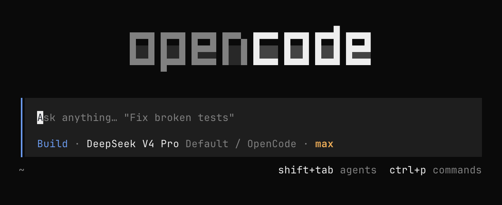
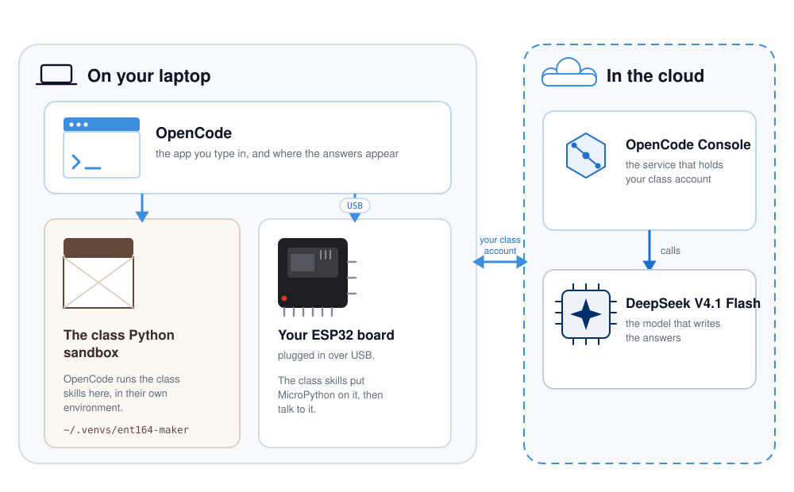
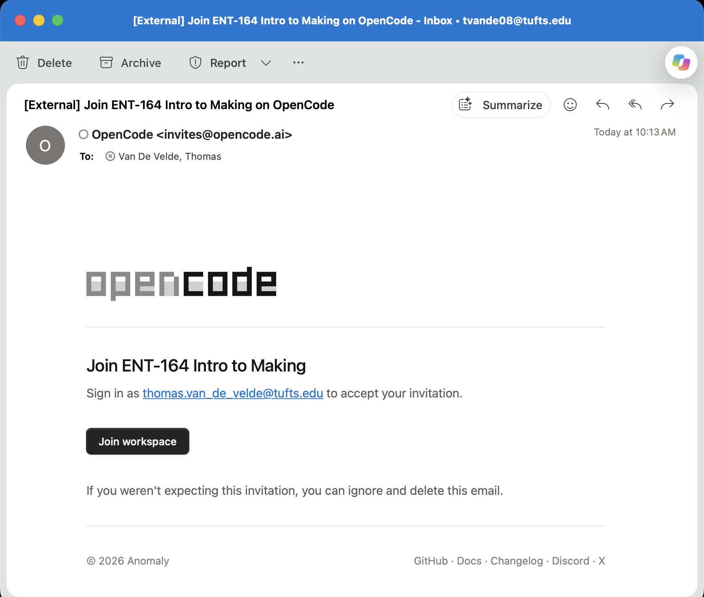
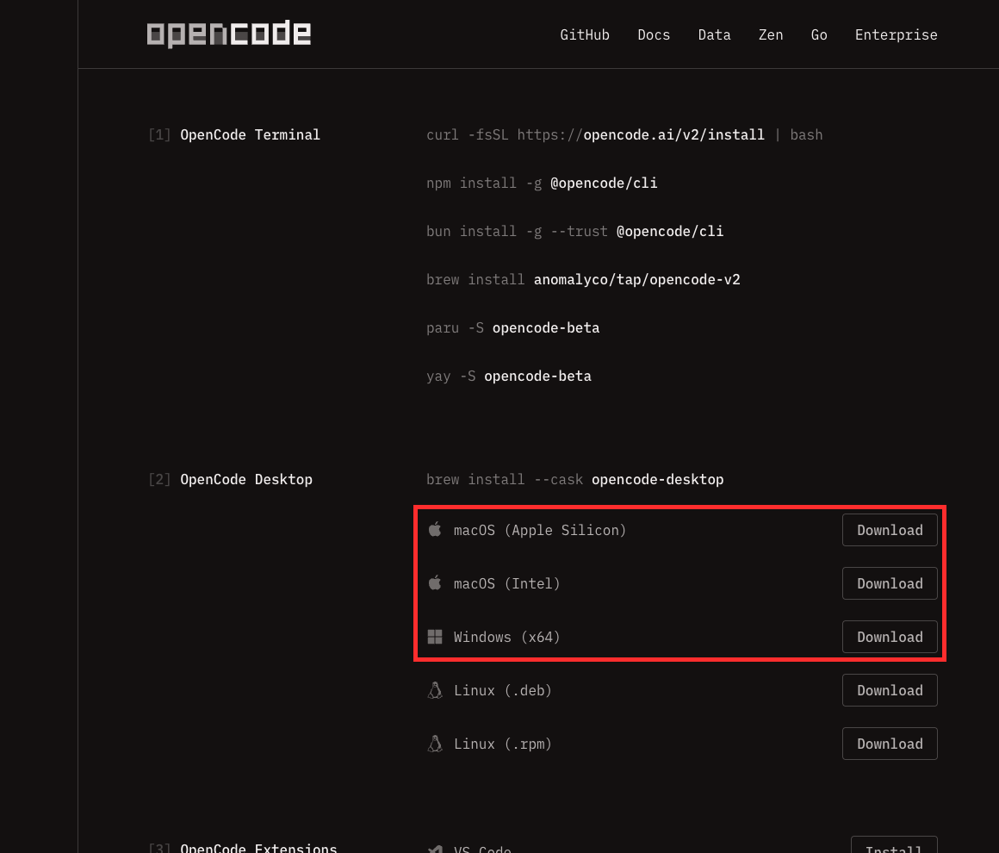
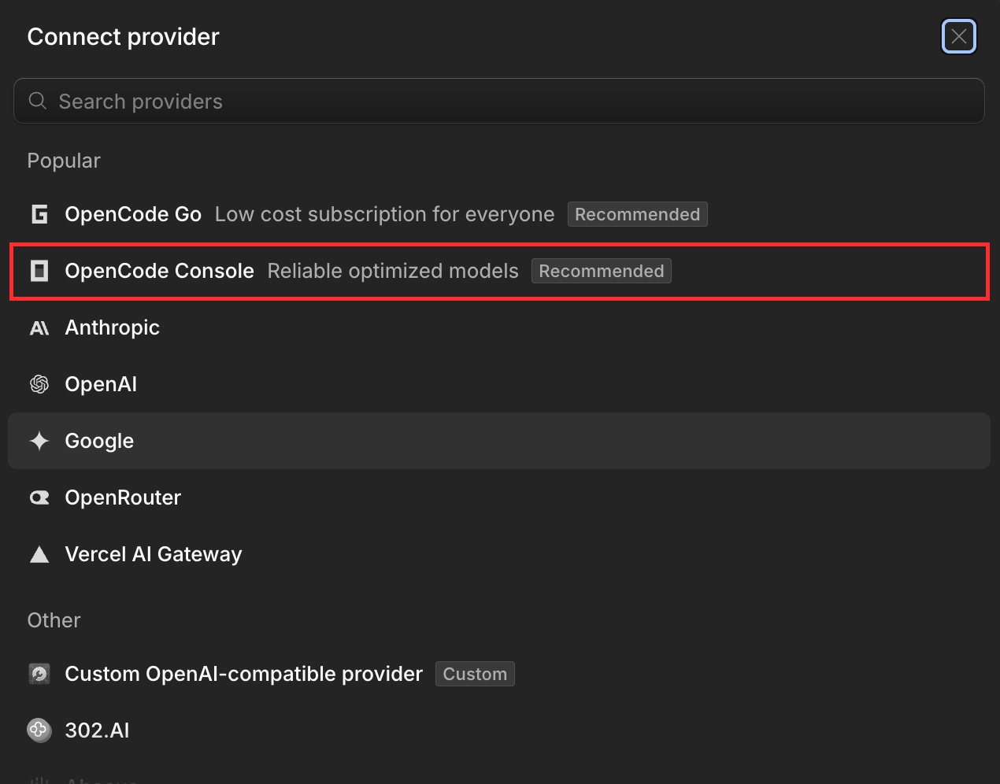
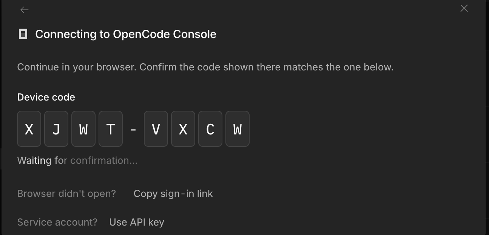
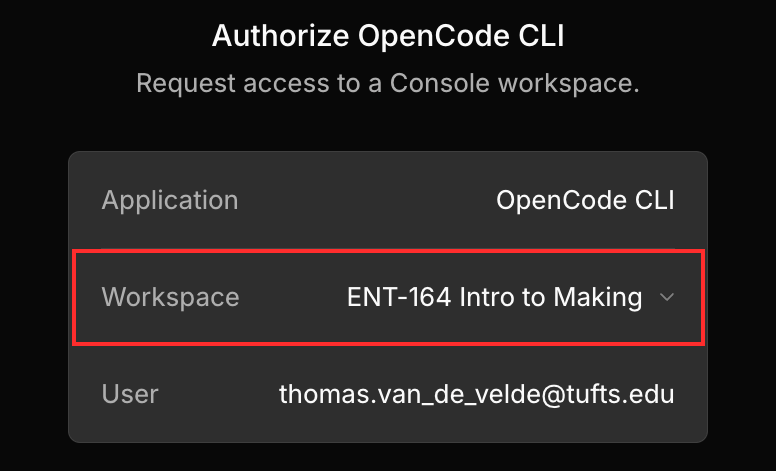
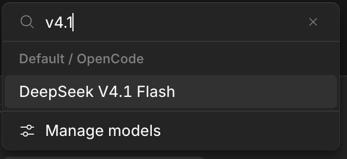
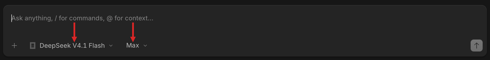
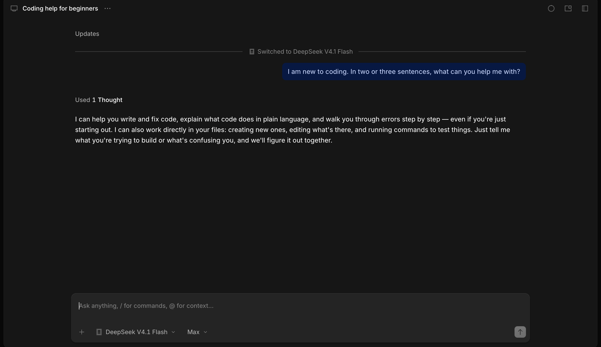

Beginner's Guide · macOS & Windows · No experience needed
AI Coding Agent Setup Guide
Accept the class invitation, install the OpenCode app, sign in, and start making.
About 20 minutes
For macOS & Windows
Provider: OpenCode Console
Model: DeepSeek V4.1 Flash

The OpenCode message box. Type your questions here.
OpenCode is an AI helper that runs as an app on your computer. You ask questions in plain English, and it answers them, explains code, and walks you through technical work. That includes the wiring diagrams, the Onshape questions, and the error messages you can't read.
DeepSeek V4.1 Flash is the model that writes the answers. OpenCode Console is the service that connects the app to it with your class account.

Figure 1. The parts of the system, and where they run. On your laptop: OpenCode, the Python sandbox that runs the class skills and uploads code to the board, and your ESP32 over USB. In the cloud: OpenCode Console and DeepSeek V4.1 Flash, the model that writes the answers.
One way to keep them straight: OpenCode is your phone, OpenCode Console is the phone company, and DeepSeek V4.1 Flash is the person you're calling. This guide gets all three working. You won't touch a terminal or write any code.
Why DeepSeek V4.1 Flash for this class?
Built for this work. It's tuned for reasoning and for using tools, which is most of what your projects ask of it.
Open weights. ChatGPT, Claude and Gemini are closed: you can use them, but you cannot look inside. DeepSeek publishes this model under an open licence, so anyone can inspect it and run it themselves. That fits a class where you take things apart to learn how they work.
Long sessions. Coding needs a lot of working memory. Free ChatGPT and Claude sessions are limited, and they often run out in the middle of a job. This model holds a million tokens at once, about the length of a long novel, so the code, the errors and the conversation stay with it until the work is done.
One account. Console gives us access to it, so you sign in once. You can try other models later without starting over.
What you'll need
A laptop running macOS 13 or newer, or Windows 10 or 11
An internet connection
Your Tufts email. The class invitation goes there, and you sign in with it in Step 1
Nothing to pay. The class budget covers AI use for your coursework
One name you'll see twice.OpenCode Console is the OpenCode team's service: one account, and a set of AI models they have tested and picked. In the app it sometimes appears as OpenCode Zen, as in the screenshot above. Same service, two names, and this guide uses OpenCode Console, like the sign-in page does.
The maker skills. The class website publishes a set of maker skills for OpenCode. A skill is a set of instructions for one job. OpenCode knows the name and description of every skill you have, and when your request matches one, it loads that skill's full instructions and follows them. The class skills cover the work this course does: drawing wiring diagrams for your ESP32 kit, preparing a file for the laser cutter, and building finger-jointed boxes. OpenCode installs them in Step 7, and your instructor keeps them up to date.
About Python. The maker skills are programs, so they need Python. You do not install anything by hand: the first time a skill runs, OpenCode sets up a private Python environment for the class in ~/.venvs/ent164-maker and installs what the skills need there. It never touches the Python you already have.
The one catch is the base Python 3 that environment needs. Macs and Windows machines usually do not come with it. If yours is missing, OpenCode offers to install it: on a Mac that opens the Command Line Tools dialog, and on Windows it runs winget install Python.Python.3.12.
1
Accept your class invitation
Your instructor adds you to the class workspace with your Tufts email. The invitation arrives by email. You accept it once.
Check your Tufts inbox for an invitation to the class workspace and click the link in it.
Sign in with your Tufts email (for example yourname@tufts.edu). The Google button saves you a password.
You land in the class workspace, ENT-164 Intro to Making.

Figure 2. The invitation email. Click Join workspace and sign in with the same Tufts address the email was sent to.
Use your Tufts email. The invitation is tied to the address your instructor invited. Sign in with anything else and you won't see the class workspace, and the class budget won't apply.
2
Download the OpenCode app
Open your browser and go to opencode.ai/download.
Under OpenCode Desktop, click the download for your computer: macOS (Apple Silicon or Intel) or Windows (x64).
The download starts. The file lands in your Downloads folder.

Figure 3. The download page. Under OpenCode Desktop, pick the installer for your computer. Both are on the page.
3
Install the app
On a Mac:
Open the downloaded file. Click it in your Downloads folder, or in the notification your browser shows.
A small window opens showing the OpenCode icon and your Applications folder.
Drag the OpenCode icon onto the Applications folder, exactly like the arrow shows.
Close that window, open OpenCode from your Applications folder (or press ⌘+Space, type OpenCode, and press Enter).
On Windows:
Open your Downloads folder and double-click the OpenCode installer. The file ends in .exe.
Follow the prompts. If Windows shows "Windows protected your PC", click More info, then Run anyway.
When it finishes, open OpenCode from the Start menu: press the Windows key, type OpenCode, and press Enter.
If your computer warns about the app. Yes, it looks alarming, and it is the warning every app gets when it arrives from the internet rather than an app store. On a Mac, right-click (Control-click) OpenCode in Applications, choose Open, and confirm; on Windows, click More info, then Run anyway. The app is signed and comes straight from opencode.ai.
4
Sign in to OpenCode Console
This step connects the app to your class account. You sign in, and that is the whole step: no API key, no password to copy. If a dialog offers you a key, it is offering the wrong thing.
Open OpenCode. The message box sits at the bottom, the same box you type questions in.
Type /connect and press Enter. A Connect provider list opens.
Click OpenCode Console. It's in the Popular section, marked Recommended.

Figure 4. Typing /connect opens the provider list. Click OpenCode Console, outlined in red.
The app shows a device code, a short number that proves the sign-in is yours, and says "Continue in your browser". Your web browser opens the OpenCode sign-in page. If it doesn't open, click Copy sign-in link and paste it into your browser yourself.
Sign in on that page with your Tufts email.
Check the workspace. The authorization page must show the class workspace, ENT-164 Intro to Making. If it shows a different workspace, click it and choose ENT-164 Intro to Making before you approve.
Confirm the code on the page matches the code in the app, and approve the sign-in.
Switch back to OpenCode. The window now says OpenCode connected, and OpenCode Console appears under Connected providers. You do this once. The app remembers you.

Figure 5. The device code in the app. Your browser opens to the sign-in page. Sign in there, approve, and this dialog finishes on its own.

Figure 6. The authorization page in your browser. Workspace must say ENT-164 Intro to Making, outlined in red. If it says something else, click it and choose the class workspace before you approve.
Ignore "Use API key". The dialog offers it under "Service account?", which is for shared team setups. Your class doesn't use one. You sign in with your own account and never paste a key.
Prefer menus? The same provider list is at Settings → Providers → OpenCode Console → Connect. If your Settings sidebar shows a Servers list, open your server first (usually Local Server). Providers is inside it.
5
Choose DeepSeek V4.1 Flash
Click the model button under the message box. It shows the model you're using, something like Big Pickle. Then:
Type v4.1 in the search box at the top of the panel.
Click DeepSeek V4.1 Flash. It's listed under Default / OpenCode.
Set the effort to Max. The dropdown next to the model button says Default; open it and choose Max. Max is the setting that works through a hard problem, and the lower settings answer faster.
If it doesn't appear, click Manage models at the bottom, search v4.1, and turn on the switch next to DeepSeek V4.1 Flash. The list is a catalogue; the switch is what puts a model on your menu. Close the panel and pick it from the list.

Figure 7. In the model list, type v4.1 and click DeepSeek V4.1 Flash. Manage models is the last row if you need to switch it on first.
How to tell it worked. The button under the message box says DeepSeek V4.1 Flash, and the effort next to it says Max. Every new question uses that model. The old one is still in the list if you want it back.

Figure 8. What the message box should look like when both are set. One red arrow marks the model button, which should say DeepSeek V4.1 Flash. The other marks the effort, which should say Max.
6
Ask your first question
Click the message box at the bottom that says "Ask anything…".
Type a question in plain English, for example: "I'm new to coding. What can you help me with?"
Press Enter (or click the arrow button at the right) and wait a few seconds. The answer appears under your question.

Figure 9. Your question appears in the bubble on the right; the answer gets written below it. The model's name is always visible under the message box.
To quit: on a Mac, press ⌘+Q; on Windows, close the window or press Alt+F4. To come back later, open OpenCode again. Your conversations wait as tabs at the top.
7
Add your class tools
OpenCode can add a set of class tools from the class website, and your instructor keeps them up to date. The first one draws wiring diagrams for your ESP32 kit. Describe a circuit, and OpenCode draws a labelled breadboard picture with the jumper wires already routed, and that is worth having on the bench. A picture is much easier to check than a paragraph of pin numbers.
Click in the message box and paste this whole sentence:
Copy and paste this
Add my class skills to opencode: https://tuftsmaker.github.io/skills
Press Enter and let it work. It downloads the class tools and remembers where they came from, so it can update them later.
If it asks permission, something like "Can I change your settings file?", click Allow or Yes. It's changing OpenCode's own settings and nothing else on your computer.
Quit OpenCode and open it again (on a Mac, ⌘+Q; on Windows, close the window). The new tools load at startup.
Test them. Type this into the message box and press Enter:
Try asking
I am a maker. How can you help me?
If the answer mentions the class tools and the wiring diagrams, you're set. Ask for a diagram whenever you need one, for example "Draw me a wiring diagram for connecting an LED to my ESP32". Each one is saved in your project folder as a picture you can zoom and trace.
One-time step. The class tools update themselves when your instructor improves them. You never repeat this.
If something goes wrong
What you see
What to do
Your computer won't open the app
Mac: in Applications, right-click (Control-click) OpenCode and choose Open, or use System Settings → Privacy & Security → Open Anyway. Windows: in the installer warning, click More info → Run anyway.
No invitation email
Check your Tufts inbox's spam folder, and confirm your instructor has your correct tufts.edu address. Your instructor can send it again.
The invitation page says it belongs to a different account
Your browser is signed in as someone else. Click Sign out and continue on that page, then sign in with the Tufts address the invitation was sent to.
Can't find the provider panel
Type /connect in the message box. The provider list opens there. The same list is under Settings → Providers. If Settings shows a Servers list, open your server first (usually Local Server).
OpenCode Console isn't in the list
It's in Popular providers near the top, marked Recommended. If you still don't see it, click Show more providers.
The browser doesn't open for sign-in
Click Copy sign-in link in the app, then paste it into your browser's address bar.
"This sign-in request has expired"
The device code timed out. Click Try again to get a fresh one, and finish the sign-in a little faster.
Signed in but DeepSeek isn't in the model list
You may have authorized a different workspace. Go back to Settings → Providers, Disconnect OpenCode Console, connect again, and this time switch the workspace to ENT-164 Intro to Making on the authorization page. If it still doesn't appear, use Manage models in the model panel, search v4.1, and switch it on.
An error about credits or balance
Don't add credit yourself. Check that you signed in to the ENT-164 Intro to Making workspace, then tell your instructor. The shared budget may be out of funds.
It asks for an API key
You don't need one. Close that dialog and use the account sign-in instead; the API key option is only for shared service accounts.
OpenCode says it can't reach the website (Step 7)
Check your wifi. The class tools download from the class website the first time.
The class tools don't seem to be on
Ask OpenCode "I am a maker. How can you help me?" If it doesn't know the class tools, paste the sentence from Step 7 again, then quit and reopen OpenCode.
No answer, or it seems stuck
Wait ten seconds. The first reply can be slow. Check your internet, then ask again. Quitting and reopening the app also helps.
Words you'll see
OpenCode
The app on your computer where you chat with the AI.
OpenCode Console
The service that connects the app to a tested set of AI models. You reach it by signing in with your class account.
Device code
The short code the app shows during sign-in. Your browser shows the same code, and you approve it there.
Workspace
The shared class area in OpenCode Console. Here, ENT-164 Intro to Making. Choose it when the sign-in page asks.
Class tools (skills)
Extra abilities the class website teaches OpenCode, including the wiring-diagram maker. OpenCode downloads its own copy and keeps it up to date.
Provider
The service that runs the AI connection. Here, OpenCode Console.
Model
The AI model you're talking to. Here, DeepSeek V4.1 Flash.
Session / tab
One conversation. Each tab at the top of the app is a separate chat.
Where everything lives
What you want
Where to click
Accept the class invitation
The link in the email your instructor sent to your Tufts address
Sign in or manage your account
opencode.ai/console. Sign in with your Tufts email.
Connect or fix your provider
Type /connect in the message box → OpenCode Console (or Settings → Providers; if Settings shows a Servers list, open your server first (usually Local Server))
Switch to the class workspace
On the authorization page during sign-in, choose ENT-164 Intro to Making
Start a new chat
The + next to the tabs at the very top
Change the model
The model button under the message box (shows "DeepSeek V4.1 Flash")
Show all models
Model button → Manage models
Your class tools and wiring diagrams
The class tools live at tuftsmaker.github.io/skills; every diagram you make is saved in your project folder as a picture
Quit the app
Mac: ⌘+Q · Windows: close the window or Alt+F4
Things to try in your first week
You don't need to know any code to start. Ask in plain English:
You can ask
What you get
"I'm new to coding. What can you help me with?"
A plain-language list of what it can do, and where to start.
"Explain this like I've never seen it before"
Any file or concept broken down step by step, in beginner terms.
"Draw me a wiring diagram for connecting an LED to my ESP32"
A labelled breadboard picture, once the class tools are on (Step 7).
"Help me prepare my Onshape sketch for the laser cutter"
Checks and fixes so your DXF is ready for Nolop.
Once you're comfortable, the official docs at opencode.ai/docs show what else OpenCode can do.